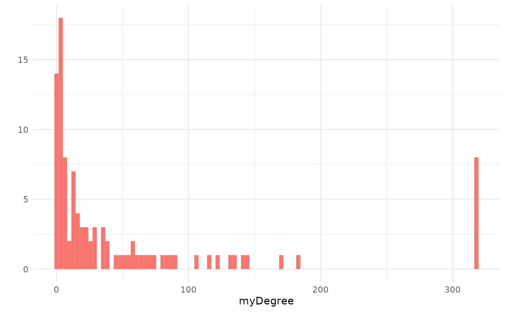
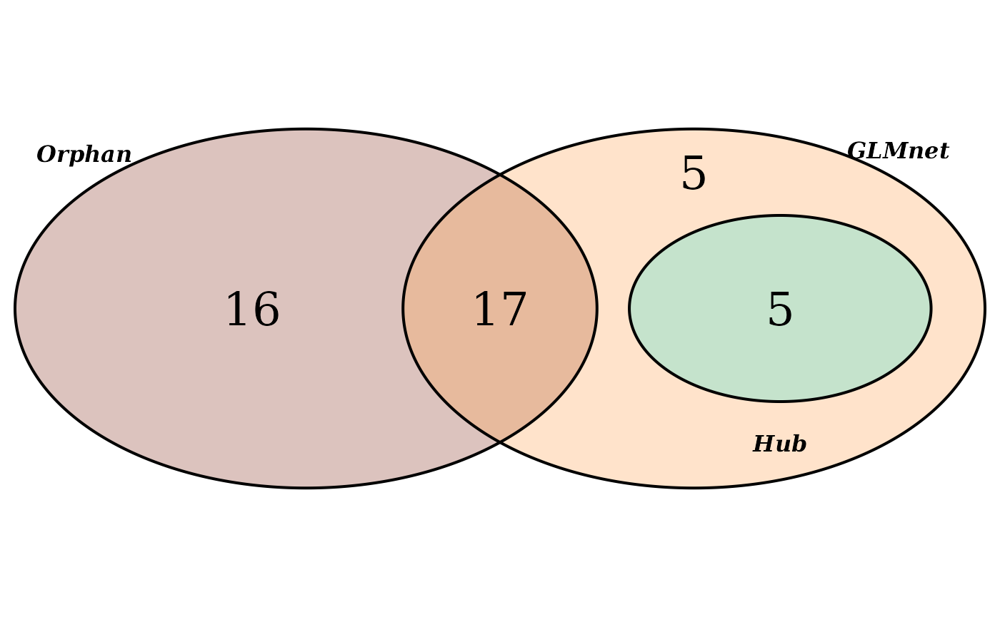

example_brca_protein-protein-interactions_survival.Rmd
if (!require("BiocManager")) {
install.packages("BiocManager")
}
BiocManager::install("glmSparseNet")
library(dplyr)
library(Matrix)
library(ggplot2)
library(forcats)
library(parallel)
library(reshape2)
library(survival)
library(VennDiagram)
library(futile.logger)
library(curatedTCGAData)
library(MultiAssayExperiment)
library(TCGAutils)
#
library(glmSparseNet)
#
#
# Some general options for futile.logger the debugging package
flog.layout(layout.format("[~l] ~m"))
options(
"glmSparseNet.show_message" = FALSE,
"glmSparseNet.base_dir" = withr::local_tempdir()
)
# Setting ggplot2 default theme as minimal
theme_set(ggplot2::theme_minimal())This vignette uses the STRING database (https://string-db.org/) of protein-protein interactions as the network-based penalizer in generalized linear models using Breast invasive carcinoma sample dataset.
The degree vector is calculated manually to account for genes that are not present in the STRING database, as these will not have any interactions, i.e. edges.
Retrieve all interactions from STRING databse. We have included a helper function that retrieves the Homo sapiens known interactions.
For this vignette, we use a cached version of all interaction with
score_threshold = 700
Note: Text-based interactions are excluded from the network.
# Not evaluated in vignette as it takes too long to download and process
allInteractions700 <- stringDBhomoSapiens(scoreThreshold = 700)
stringNetwork <- buildStringNetwork(allInteractions700, "external")Build a sparse matrix object that contains the network.
stringNetworkUndirected <- stringNetwork + Matrix::t(stringNetwork)
stringNetworkUndirected <- (stringNetworkUndirected != 0) * 1## [INFO] Directed graph (score_threshold = 700)
## [INFO] * total edges: 225330
## [INFO] * unique protein: 11033
## [INFO] * edges per protein: 20.423276
## [INFO]
## [INFO] Undirected graph (score_threshold = 700)
## [INFO] * total edges: 225209
## [INFO] * unique protein: 11033
## [INFO] * edges per protein: 20.412309glmSparseNet
brca <- curatedTCGAData(
diseaseCode = "BRCA", assays = "RNASeq2GeneNorm",
version = "1.1.38", dry.run = FALSE
)Build the survival data from the clinical columns.
xdata and
ydata
# keep only solid tumour (code: 01)
brcaPrimarySolidTumor <- TCGAutils::TCGAsplitAssays(brca, "01")
xdataRaw <- t(assay(brcaPrimarySolidTumor[[1]]))
# Get survival information
ydataRaw <- colData(brcaPrimarySolidTumor) |>
as.data.frame() |>
# Convert days to integer
dplyr::mutate(
Days.to.date.of.Death = as.integer(Days.to.date.of.Death),
Days.to.Last.Contact = as.integer(Days.to.Date.of.Last.Contact)
) |>
# Find max time between all days (ignoring missings)
dplyr::rowwise() |>
dplyr::mutate(
time = max(days_to_last_followup, Days.to.date.of.Death,
Days.to.Last.Contact, days_to_death,
na.rm = TRUE
)
) |>
# Keep only survival variables and codes
dplyr::select(patientID, status = vital_status, time) |>
# Discard individuals with survival time less or equal to 0
dplyr::filter(!is.na(time) & time > 0) |>
as.data.frame()
# Set index as the patientID
rownames(ydataRaw) <- ydataRaw$patientID
# keep only features that are in degreeNetworkVector and have
# standard deviation > 0
validFeatures <- colnames(xdataRaw)[
colnames(xdataRaw) %in% names(degreeNetworkVector[degreeNetworkVector > 0])
]
xdataRaw <- xdataRaw[
TCGAbarcode(rownames(xdataRaw)) %in% rownames(ydataRaw), validFeatures
]
xdataRaw <- scale(xdataRaw)
# Order ydata the same as assay
ydataRaw <- ydataRaw[TCGAbarcode(rownames(xdataRaw)), ]
# Using only a subset of genes previously selected to keep this short example.
set.seed(params$seed)
smallSubset <- c(
"AAK1", "ADRB1", "AK7", "ALK", "APOBEC3F", "ARID1B", "BAMBI",
"BRAF", "BTG1", "CACNG8", "CASP12", "CD5", "CDA", "CEP72",
"CPD", "CSF2RB", "CSN3", "DCT", "DLG3", "DLL3", "DPP4",
"DSG1", "EDA2R", "ERP27", "EXD1", "GABBR2", "GADD45A",
"GBP1", "HTR1F", "IFNK", "IRF2", "IYD", "KCNJ11", "KRTAP5-6",
"MAFA", "MAGEB4", "MAP2K6", "MCTS1", "MMP15", "MMP9",
"NFKBIA", "NLRC4", "NT5C1A", "OPN4", "OR13C5", "OR13C8",
"OR2T6", "OR4K2", "OR52E6", "OR5D14", "OR5H1", "OR6C4",
"OR7A17", "OR8J3", "OSBPL1A", "PAK6", "PDE11A", "PELO",
"PGK1", "PIK3CB", "PMAIP1", "POLR2B", "POP1", "PPFIA3",
"PSME1", "PSME2", "PTEN", "PTGES3", "QARS", "RABGAP1",
"RBM3", "RFC3", "RGPD8", "RPGRIP1L", "SAV1", "SDC1", "SDC3",
"SEC16B", "SFPQ", "SFRP5", "SIPA1L1", "SLC2A14", "SLC6A9",
"SPATA5L1", "SPINT1", "STAR", "STXBP5", "SUN3", "TACC2",
"TACR1", "TAGLN2", "THPO", "TNIP1", "TP53", "TRMT2B", "TUBB1",
"VDAC1", "VSIG8", "WNT3A", "WWOX", "XRCC4", "YME1L1",
"ZBTB11", "ZSCAN21"
) |>
sample(size = 50) |>
sort()
# make sure we have 100 genes
smallSubset <- c(smallSubset, sample(colnames(xdataRaw), 51)) |>
unique() |>
sort()
xdata <- xdataRaw[, smallSubset[smallSubset %in% colnames(xdataRaw)]]
ydata <- ydataRaw |>
dplyr::select(time, status) |>
dplyr::filter(!is.na(time) | time < 0)
#
# Add degree 0 to genes not in STRING network
myDegree <- degreeNetworkVector[smallSubset]
myString <- stringNetworkBinary[smallSubset, smallSubset]Degree distribution for sample set of gene features (in xdata).

set.seed(params$seed)
foldid <- glmSparseNet:::balancedCvFolds(ydata$status)$outputPenalizes using the Hub heuristics, see hubHeuristic
function definition for more details.
resultCVHub <- cv.glmHub(xdata,
Surv(ydata$time, ydata$status),
family = "cox",
foldid = foldid,
network = myString,
network.options = networkOptions(minDegree = 0.2)
)Kaplan-Meier estimator separating individuals by low and high risk (based on model’s coefficients)
## Warning: The `plot.title` argument of `separate2GroupsCox()` is deprecated as of
## glmSparseNet 1.21.0.
## ℹ Please use the `plotTitle` argument instead.
## This warning is displayed once every 8 hours.
## Call `lifecycle::last_lifecycle_warnings()` to see where this warning was
## generated.## Warning: The `legend.outside` argument of `separate2GroupsCox()` is deprecated as of
## glmSparseNet 1.21.0.
## ℹ Please use the `legendOutside` argument instead.
## This warning is displayed once every 8 hours.
## Call `lifecycle::last_lifecycle_warnings()` to see where this warning was
## generated.## $pvalue
## [1] 9.628346e-05
##
## $plot
##
## $km
## Call: survfit(formula = survival::Surv(time, status) ~ group, data = prognosticIndexDf)
##
## n events median 0.95LCL 0.95UCL
## Low risk - 1 983 129 3959 3738 7455
## High risk - 1 97 23 2911 2469 NAPenalizes using the Orphan heuristics, see
orphanHeuristic function definition for more details.
resultCVOrphan <- cv.glmOrphan(xdata,
Surv(ydata$time, ydata$status),
family = "cox",
foldid = foldid,
network = myString,
network.options = networkOptions(minDegree = 0.2)
)Kaplan-Meier estimator separating individuals by low and high risk (based on model’s coefficients)
## $pvalue
## [1] 0
##
## $plot
##
## $km
## Call: survfit(formula = survival::Surv(time, status) ~ group, data = prognosticIndexDf)
##
## n events median 0.95LCL 0.95UCL
## Low risk - 1 540 34 7455 6456 NA
## High risk - 1 540 118 2866 2573 3472Uses regular glmnet model as simple baseline
## Loaded glmnet 4.1-8
resultCVGlmnet <- cv.glmnet(xdata,
Surv(ydata$time, ydata$status),
family = "cox",
foldid = foldid
)Kaplan-Meier estimator separating individuals by low and high risk (based on model’s coefficients)
## $pvalue
## [1] 0
##
## $plot
##
## $km
## Call: survfit(formula = survival::Surv(time, status) ~ group, data = prognosticIndexDf)
##
## n events median 0.95LCL 0.95UCL
## Low risk - 1 540 38 6593 4398 NA
## High risk - 1 540 114 2854 2551 3461Venn diagram of overlapping genes.

Descriptive table showing which genes are selected in each model
We can observe, that elastic net without network-based penalization selects the best model with 40% more genes than glmOrphan and glmHub, without loosing accuracy.
note: size of circles represent the degree of that gene in network.

## R version 4.3.2 (2023-10-31)
## Platform: x86_64-pc-linux-gnu (64-bit)
## Running under: Ubuntu 22.04.3 LTS
##
## Matrix products: default
## BLAS: /usr/lib/x86_64-linux-gnu/openblas-pthread/libblas.so.3
## LAPACK: /usr/lib/x86_64-linux-gnu/openblas-pthread/libopenblasp-r0.3.20.so; LAPACK version 3.10.0
##
## locale:
## [1] LC_CTYPE=C.UTF-8 LC_NUMERIC=C LC_TIME=C.UTF-8
## [4] LC_COLLATE=C.UTF-8 LC_MONETARY=C.UTF-8 LC_MESSAGES=C.UTF-8
## [7] LC_PAPER=C.UTF-8 LC_NAME=C LC_ADDRESS=C
## [10] LC_TELEPHONE=C LC_MEASUREMENT=C.UTF-8 LC_IDENTIFICATION=C
##
## time zone: UTC
## tzcode source: system (glibc)
##
## attached base packages:
## [1] stats4 grid parallel stats graphics grDevices utils
## [8] datasets methods base
##
## other attached packages:
## [1] glmnet_4.1-8 glmSparseNet_1.21.2
## [3] TCGAutils_1.22.2 curatedTCGAData_1.24.1
## [5] MultiAssayExperiment_1.28.0 SummarizedExperiment_1.32.0
## [7] Biobase_2.62.0 GenomicRanges_1.54.1
## [9] GenomeInfoDb_1.38.6 IRanges_2.36.0
## [11] S4Vectors_0.40.2 BiocGenerics_0.48.1
## [13] MatrixGenerics_1.14.0 matrixStats_1.2.0
## [15] VennDiagram_1.7.3 futile.logger_1.4.3
## [17] survival_3.5-7 reshape2_1.4.4
## [19] forcats_1.0.0 ggplot2_3.4.4
## [21] Matrix_1.6-1.1 dplyr_1.1.4
## [23] BiocStyle_2.30.0
##
## loaded via a namespace (and not attached):
## [1] shape_1.4.6 jsonlite_1.8.8
## [3] magrittr_2.0.3 GenomicFeatures_1.54.3
## [5] farver_2.1.1 rmarkdown_2.25
## [7] fs_1.6.3 BiocIO_1.12.0
## [9] zlibbioc_1.48.0 ragg_1.2.7
## [11] vctrs_0.6.5 memoise_2.0.1
## [13] Rsamtools_2.18.0 RCurl_1.98-1.14
## [15] rstatix_0.7.2 BiocBaseUtils_1.4.0
## [17] htmltools_0.5.7 S4Arrays_1.2.0
## [19] progress_1.2.3 AnnotationHub_3.10.0
## [21] lambda.r_1.2.4 curl_5.2.0
## [23] broom_1.0.5 SparseArray_1.2.4
## [25] sass_0.4.8 bslib_0.6.1
## [27] desc_1.4.3 plyr_1.8.9
## [29] zoo_1.8-12 futile.options_1.0.1
## [31] cachem_1.0.8 GenomicAlignments_1.38.2
## [33] iterators_1.0.14 mime_0.12
## [35] lifecycle_1.0.4 pkgconfig_2.0.3
## [37] R6_2.5.1 fastmap_1.1.1
## [39] GenomeInfoDbData_1.2.11 shiny_1.8.0
## [41] digest_0.6.34 colorspace_2.1-0
## [43] AnnotationDbi_1.64.1 ExperimentHub_2.10.0
## [45] textshaping_0.3.7 RSQLite_2.3.5
## [47] ggpubr_0.6.0 labeling_0.4.3
## [49] filelock_1.0.3 km.ci_0.5-6
## [51] fansi_1.0.6 httr_1.4.7
## [53] abind_1.4-5 compiler_4.3.2
## [55] bit64_4.0.5 withr_3.0.0
## [57] backports_1.4.1 BiocParallel_1.36.0
## [59] carData_3.0-5 DBI_1.2.1
## [61] highr_0.10 ggsignif_0.6.4
## [63] biomaRt_2.58.2 rappdirs_0.3.3
## [65] DelayedArray_0.28.0 rjson_0.2.21
## [67] tools_4.3.2 interactiveDisplayBase_1.40.0
## [69] httpuv_1.6.14 glue_1.7.0
## [71] restfulr_0.0.15 promises_1.2.1
## [73] checkmate_2.3.1 generics_0.1.3
## [75] gtable_0.3.4 KMsurv_0.1-5
## [77] tzdb_0.4.0 tidyr_1.3.1
## [79] survminer_0.4.9 data.table_1.15.0
## [81] hms_1.1.3 car_3.1-2
## [83] xml2_1.3.6 utf8_1.2.4
## [85] XVector_0.42.0 foreach_1.5.2
## [87] BiocVersion_3.18.1 pillar_1.9.0
## [89] stringr_1.5.1 later_1.3.2
## [91] splines_4.3.2 BiocFileCache_2.10.1
## [93] lattice_0.21-9 rtracklayer_1.62.0
## [95] bit_4.0.5 tidyselect_1.2.0
## [97] Biostrings_2.70.2 knitr_1.45
## [99] gridExtra_2.3 bookdown_0.37
## [101] xfun_0.42 stringi_1.8.3
## [103] yaml_2.3.8 evaluate_0.23
## [105] codetools_0.2-19 tibble_3.2.1
## [107] BiocManager_1.30.22 cli_3.6.2
## [109] xtable_1.8-4 systemfonts_1.0.5
## [111] munsell_0.5.0 jquerylib_0.1.4
## [113] survMisc_0.5.6 Rcpp_1.0.12
## [115] GenomicDataCommons_1.26.0 dbplyr_2.4.0
## [117] png_0.1-8 XML_3.99-0.16.1
## [119] ellipsis_0.3.2 pkgdown_2.0.7
## [121] readr_2.1.5 blob_1.2.4
## [123] prettyunits_1.2.0 bitops_1.0-7
## [125] scales_1.3.0 purrr_1.0.2
## [127] crayon_1.5.2 rlang_1.1.3
## [129] rvest_1.0.4 KEGGREST_1.42.0
## [131] formatR_1.14